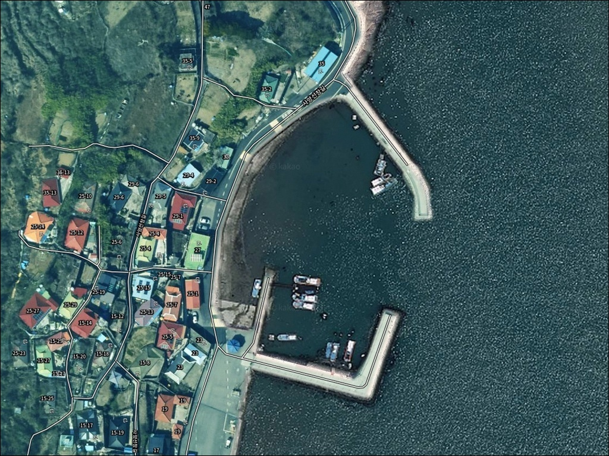
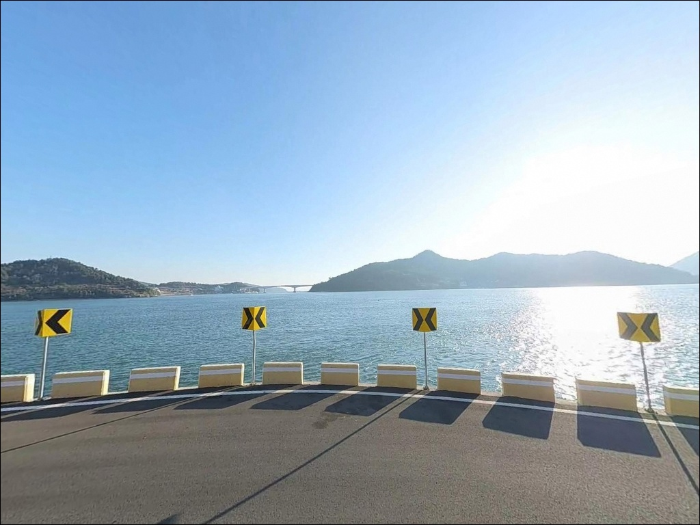
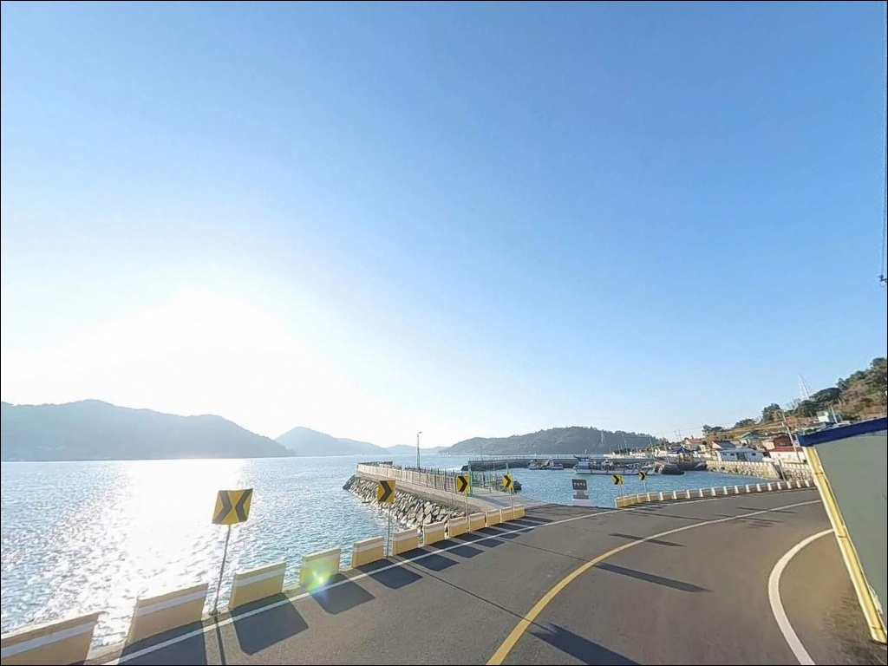
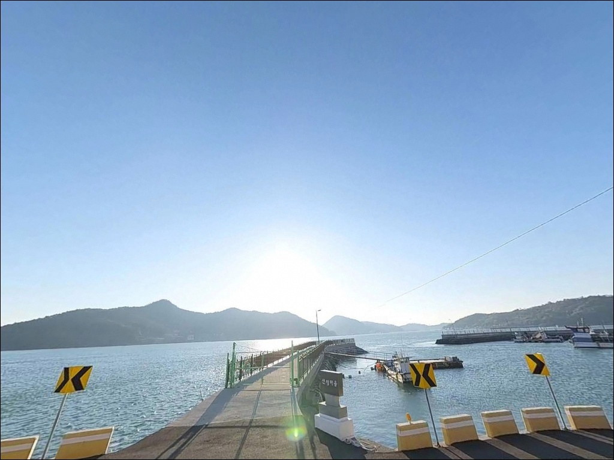
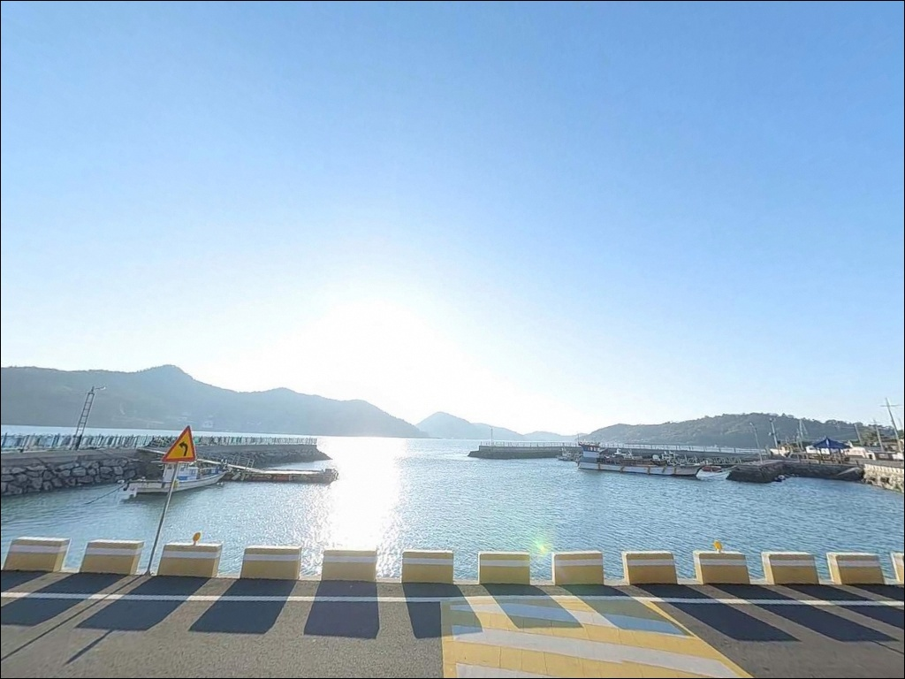
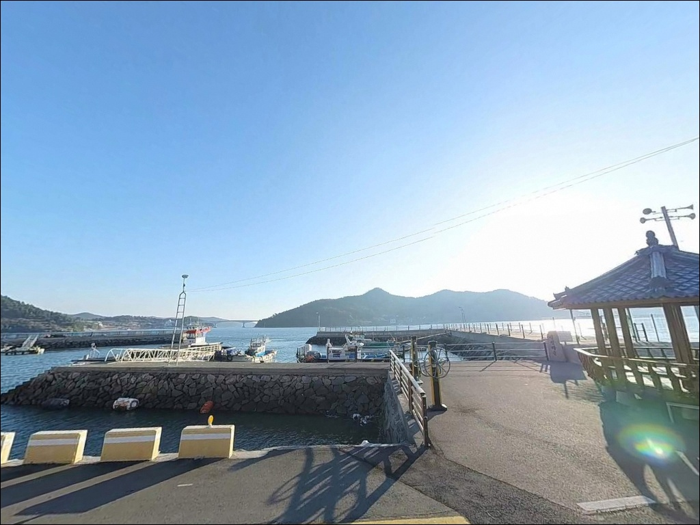
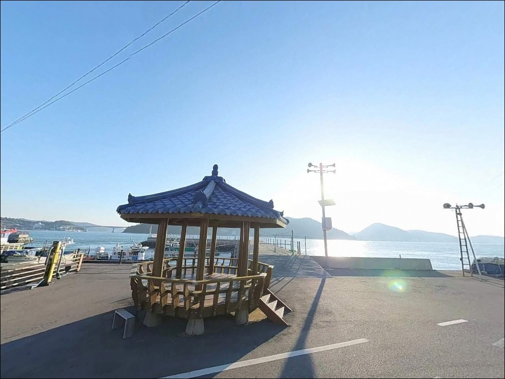
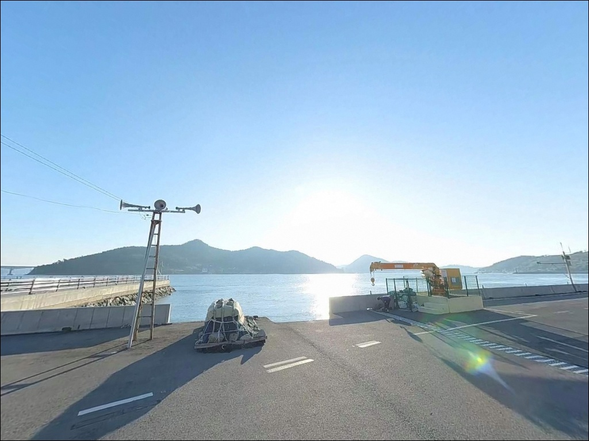
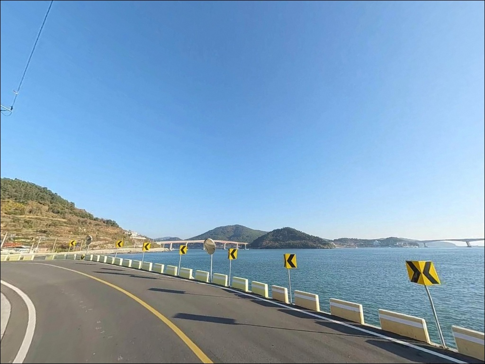

사리 물때엔 채비도 못 내리는 사양도방파제, 정조 타이밍에 살아난 입질
이 페이지에는 광고(제휴 링크 포함)가 있으며, 광고 링크를 통해 구매하면 운영자가 판매 수익 또는 수수료를 받을 수 있습니다. 포인트 사진: 카카오맵 스카이뷰·로드뷰. 이 페이지의 지도·사진 이미지는 카카오맵의 실제 서비스 이미지와 다를 수 있습니다.


포인트 안내
사양도방파제 (사양항 방파제)
전남 고흥군 봉래면 사양리 473-2
사양대교 개통 이후 많은 낚시인이
물때 확인 없이 사양도방파제를 찾다가
강한 물골 조류에 막혀 채비 운영 자체를
포기하는 상황을 맞닥뜨립니다.
사양도와 내나로도 사이 수로는
조류가 집중되는 구조라,
사리 전후에는 무거운 봉돌로도
채비 고정이 어려운 수준까지 세집니다.
이 글은 사양도방파제의
물골 조류 특성과 진입 여건,
낚시 스타일별 공략 조건에 집중합니다.
조황 단정이나 어종 보장은
이 글의 범위에 포함되지 않습니다.

1. 진입 동선과 포인트 접근성
사양도는 사양대교가 개통되면서
고흥 본섬에서 차량으로 직접 들어올 수 있는 섬입니다.
나로도 방면 도로에서 분기되는 소형 도로를 통해
사양리까지 이어지며,
섬 내부 해안도로를 따라 사양항까지 연결됩니다.
진입로는 승용차와 SUV 기준 통행에 무리가 없는 편이나
섬 내 마을 도로 구간에서
폭이 좁아지는 구간이 일부 존재합니다.
초행이라면 대형 캠핑 차량 전에
진입로를 미리 확인해 두는 편이 안전합니다.
사양항 물양장은 공간이 넓어
대형 캠핑카나 카라반도 회차가 자유로운 편입니다.
방파제와 인접한 물양장 전면이
주차 공간으로 가장 활용하기 편하며,
어선 출입 동선과 겹치지 않는 자리를
먼저 확인하고 주차하는 것이 기본 매너입니다.

2. 차박 환경과 야간 체류 여건
사양항 물양장은 공간이 넓은 편이라
낚시 후 차 안에서 하룻밤 머무는 데
큰 불편은 없습니다.
항구 내 가로등 시설이 갖춰져 있어
야간에도 어느 정도 밝은 환경이 유지됩니다.
다만 마을과 인접해 있어
소음과 조명 방향에 주의하는 매너가 필요합니다.
사양대교 개통 이후 방문객이 늘면서
마을 주민들과의 마찰을 유발하지 않는 것이
중요해졌습니다.
야간 소음 관리와 쓰레기 수거는
기본 준수 사항입니다.
사양도 일대는 다도해해상국립공원으로
지정된 구역입니다.
국립공원 구역 안에서는
지정된 장소 외 야영·취사가 허용되지 않으므로,
출발 전 관할 사무소에 확인하는 것이 먼저입니다.


3. 주변 편의시설 및 인프라 현황
사양항 방파제 인근에는
공중화장실이 설치되어 있습니다.
마을 내 소규모 매점이 있으나
품목이 제한적인 편이라,
식수·얼음·낚시 소품은
나로도 입구 상권에서 사전에 준비하고
들어오는 것이 효율적입니다.
반경 10km권으로 이동하면
봉래면 소재지 방향에서
기본 생활 인프라를 이용할 수 있으며,
나로도항(축정항) 일대에도
편의 시설이 집중되어 있습니다.
의료 응급 상황이 발생하면
고흥읍까지 이동 시간을
사전에 파악해 두는 것이 필요합니다.

4. 방문 전 반드시 점검해야 할 준비사항
사양도방파제 방문에서 가장 중요한 준비는
물때 확인입니다.
사양도와 내나로도 사이 물골은
사리 전후 조류가 극도로 강해지는 구간이라,
채비가 흐름을 버티지 못하는 상황이 빈번합니다.
바다타임에서 봉래면 기준 물때를 확인하고,
조금 전후 또는 만조·간조 전후를
중심으로 입장 시간을 설정하는 것이 기본입니다.
봉래면 해역은 바람 방향에 따라
파고가 달라지는 특성이 있습니다.
특히 남풍이 강할 때는
외해 방향으로 열린 방파제 끝단에
파도가 직접 올라오는 경우가 있으므로,
기상청 해양 기상 예보와 파고 정보를
출조 당일 아침에 다시 한번 확인하는 것이 안전합니다.
조류가 강한 포인트 특성상
채비 손실이 잦은 편입니다.
원투낚시라면 30호 이상의 고봉돌을
넉넉하게 준비하고,
찌낚시는 조류를 버틸 수 있는
무거운 구멍찌를 기준으로
채비를 갖춰 가는 편이 좋습니다.

5. 물골 조류가 만드는 낚시 여건
사양도방파제의 핵심은
사양도와 내나로도 사이 좁은 수로에서
형성되는 물골 조류입니다.
이 수로 구조가 방파제 외항 기준
수심 8~11m의 깊고 일정한 지형과
강력하고 꾸준한 조류 흐름을
동시에 만들어냅니다.
물골이란 두 지형 사이에 형성된 좁은 수로에서
조류가 집중되어 강하게 흐르는 구간을 말합니다.
이 구조는 회유성 어종의 이동 통로가 되고
먹이 활동이 활발해지는 조건을 만들지만,
사리 전후에는 채비 운용 자체가 불가능해질 만큼
조류 세기가 극단적으로 강해지는 단점도 함께 가집니다.
방파제 외항은 테트라포드로 마감되어 있으며
끝단 방향으로 수심이 빠르게 깊어집니다.
내항은 수심이 얕고 조류가 정체되는 구간이라
낚시 효율은 외항에 집중됩니다.
방파제 외항 끝단(콧부리)과
수로 입구 방향 측면이
조류 변화가 집중되는 핵심 자리입니다.
최신 조황은 출조 전에 반드시 검색해 보시기 바랍니다.


6. 조류 특성에 맞는 낚시 스타일 제안
이 포인트에서 지형 조건과 가장 잘 맞는 낚시는
찌낚시입니다.
물골에서 형성되는 강력한 본류대를 태워
흘리는 방식으로 운용하며,
감성돔과 참돔 계열이
이 해역에서 기대해볼 수 있는 어종입니다.
조류가 죽는 물돌이 전후 타이밍이
찌낚시 기준 핵심 구간입니다.
에깅도 이 포인트 구조에 잘 맞습니다.
에깅이란 갑오징어·무늬오징어를 대상으로
에기(인조 미끼)를 사용하는 루어낚시 방식입니다.
방파제 주변 석축과 테트라포드 인근,
바닥 지형을 에기로 공략하는 방식이
이 지형에서 유효하며,
조류가 잦아드는 정조 타이밍에
채비를 천천히 내리는 방식이 기본입니다.
원투낚시도 빠뜨리기 어려운 스타일입니다.
외항 방향으로 원투 공간이 충분히 확보되는 구조라
멀리 던져 바닥을 노리는 방식이 가능합니다.
조류가 빠른 포인트 특성상
30호 이상의 고봉돌 사용이 필요한 경우가 많으며,
조류가 느려지는 정조 시간대에
바닥 탐색을 집중하는 방식이 현실적입니다.

7. 대안 포인트와 플랜 B 동선
사양도방파제 조류가 너무 강하거나
주차 공간이 여의치 않다면
나로2교 하단이 첫 번째 대안입니다.
사양도와 유사한 물골 지형으로
조류 낚시 조건이 살아 있는 구간이며,
만조·간조 전후 타이밍을 집중 공략하는
방식이 어울립니다.
나로2교를 건너 외나로도 방향으로 이동하면
나로도항(축정항)이 있습니다.
사양도보다 인프라가 우수하고
물양장 공간도 넓어
차박 거점으로 삼기에도 안정적입니다.
처음 이 해역을 방문하는 낚시인이라면
나로도항을 기점으로 잡고
사양도를 탐색 포인트로 묶어 도는 동선이
효율적입니다.
동일 봉래면 해역 내에는
봉호방파제, 엄남방파제, 구룡방파제가
대체 낚시 포인트로 분포합니다.
바람 방향이 맞지 않거나
사양도 조류가 극단적으로 강한 날에는
이 포인트들을 플랜 B 동선으로
함께 검토하는 편이 좋습니다.

물골 조류를 읽을 수 있다면
사양도방파제는 달라집니다
찌낚시로 본류대를 흘리거나
에깅으로 물골 석축을 파고들고 싶은 낚시인이라면
사양도방파제의 지형 조건은
잘 맞는 구조입니다.
수심 8~11m의 물골과 강한 조류 흐름은
복합 낚시 운용에 충분한 조건이며,
사양대교 개통으로 접근성이 좋아진 만큼
예전보다 방문 장벽도 낮아진 포인트입니다.
반면 물때 계산 없이 사리 전후에 도착하거나
강한 조류를 버틸 채비 준비 없이 진입하면
손 하나 쓰지 못하는 상황이 될 수 있습니다.
물때 확인, 고봉돌 준비, 국립공원 야영 규정 확인,
이 세 가지를 갖추고 간다면
나로도 해역의 물골을 제대로
경험할 수 있는 포인트가 됩니다.
국립공원 야영 가능 여부를 미리 확인해 두면
낚시를 마치고 넓은 물양장에서
조용히 하룻밤 머무는 차박 일정도
무리 없이 이어갈 수 있습니다.